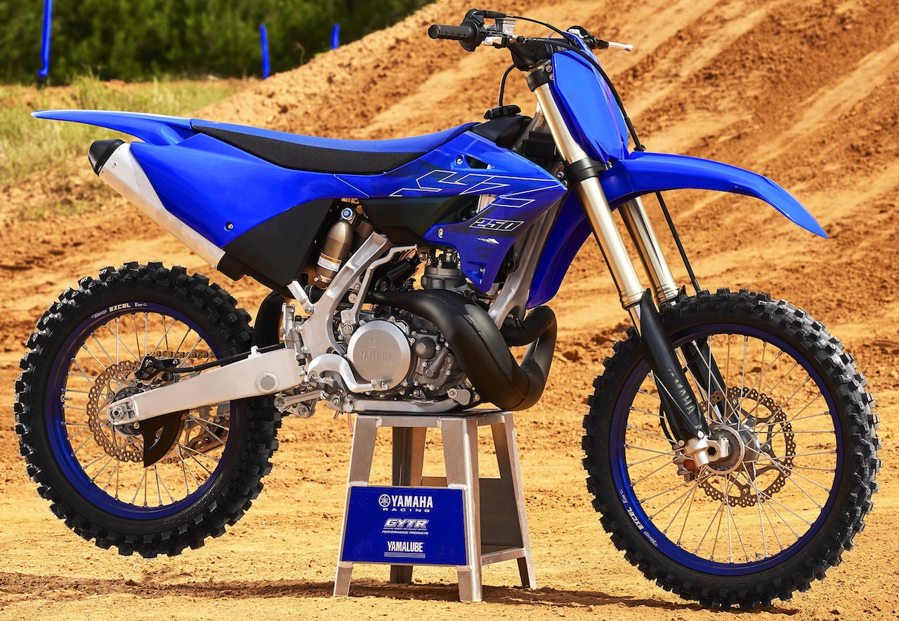

Las características de una motocicleta de enduro, están condicionadas por las disciplinas de enduro, motocross y trial. La parte ciclo de una moto de enduro es similar a la de cross, con modificaciones en suspensiones, caja de cambios y encendido con salida de luces. Las enduro son motocicletas homologadas para uso urbano, a diferencia de las de cross, que son de uso exclusivo de recintos cerrados. Respecto a la parte ciclo, al trial no se le asemeja en absoluto, pero sí en el uso y respuestas del motor. Son motos en las que su máxima potencia se entrega a bajas y medias revoluciones, que son necesarias para afrontar los distintos obstáculos tales como subidas pedregosas, escalones de rocas, troncos, etc.
